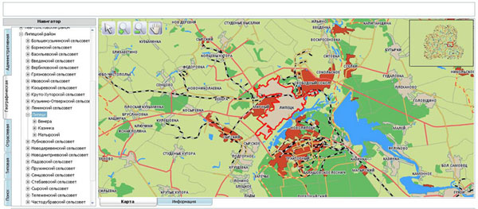
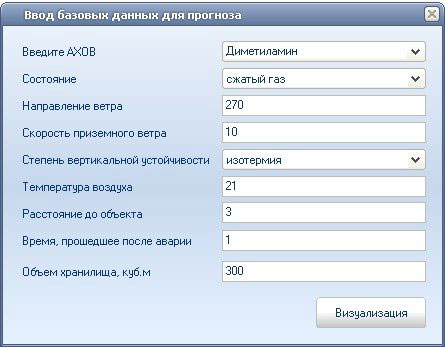

О компании
Rekarto group — 3 года успешной работы компании в сфере геопространственных и геоинформационных технологий.
С 2006 года Рекарто Груп представляет на российском геоинформационном рынке качественные программные решения, которые позволяют эффективно решать целевые задачи за счет визуализации рабочего процесса, анализа пространственных и семантических данных.
Наш инструментарий позволяет удобно работать с данными подготовленными флагманами ГИС технологий, таких как MapInfo, ESRI ArcView, КБ Панорама.
Все решения свободно масштабируются в рамках задачи, как по вертикали, так и по горизонтали.
Разработки
Мы предоставляем услуги по разработке ГИС в двух направлениях.
Оffline направление
Клиент-серверные приложения, написанные на компилируемых языках (Delphi, C++, Qt).
СУБД подбирается по нуждам заказчика, имеем опыт работы с MSSQL, MySQL, PostgreSQL, Oracle, SQLite, Advantage Database, Absolute Database.
Приложения имеют привычный интерфейс и органично вписываются в существующую инфраструктуру организации.
{kind=link}
Online направление
Клиент-серверные приложения, написанные на интерпретируемых языках (PHP, Python). Для оживления интерфейса используются различные ajax фреймфорки.
СУБД подбирается по нуждам заказчика, имеем опыт работы с MSSQL, MySQL, PostgreSQL, Oracle, SQLite, Advantage Database, Absolute Database.
Использование концепции RIA обеспечивает наглядное, интуитивно понятное представление структуры размещенной на нем информации, быстрый и логичный переход к разделам и страницам. Навигационные элементы обеспечивают однозначное понимание пользователем их смысла: ссылки на страницы снабжены заголовками, условные обозначения соответствуют общепринятым. Графические элементы навигации снабжены альтернативной подписью.
Любая последовательность действий, которую регулярно выполняет пользователь на протяжении долгого срока, становится, в конце концов, автоматичной, что значительно повышает время принятия решений согласно закону Хика. Поэтому, для удобства пользователя, имеет смысл сохранить единый интерфейс локальной и интернет версии системы.
{kind=link}
{kind=link}
Геоинформационные данные без потерь конвертируются во внутренний формат, что препятствует их возможной краже. Если у Вас отсутствует нужный картографический материал мы поможем в его составлении или приобретении. Мы работаем с форматами MapInfo *.tab/*.mif, а так же ESRI shape *.shp. Возможен импорт из других форматов. Проекция подбирается исходя из целей задачи.
На любую разработку составляется техническое задание, наши специалисты так же помогут в его составлении.
Автоматизированная информационно — справочная система мероприятий гражданской обороны и учета пожаров, чрезвычайных ситуаций
Система предназначена для автоматизации деятельности персонала структурных подразделений МЧС при выполнении своих служебных обязанностей на автоматизированных рабочих местах.
Система обеспечивает единую информационно-технологическую инфраструктуру в сфере гражданской обороны и чрезвычайных ситуаций в населенных пунктах.
Функциональные возможности системы
Принципы, которые легли в основу создания Системы:
- Использование программного и аппаратного обеспечения;
- Использование общепризнанных и широко используемых стандартов структурирования информации и описания сервисов;
- Высокая степень масштабируемости программных и аппаратных средств;
- Унификация форматов и протоколов межведомственного информационного обмена;
- Использование эффективных методов защиты от несанкционированного доступа к информационным ресурсам.
Система состоит из пяти подсистем:
- Подсистема тематических баз данных (Базы данных);
- Набор сервисов;
- Подсистема формирования геоданных;
- Интерфейс пользователя;
- Подсистема сопряжения данных.
{kind=link}
Пример визуализации запрашиваемых объектов, зоны поражения при утечке химически опасных веществ.
{kind=link}
Модуль «Учет выездов»
Предназначен для автоматизации рабочего места дежурного и служит для нанесения на карту города выездов с их последующей визуализацией.
Возможности:
- добавление выездов с указанием даты происшествия, причины, привлекаемых органов, описанием, результатом, фото и видео материалами;
- отображение выездов на карте города по выбранным условиям отбора (дата, причина, район, реагирующие силы и средства);
- добавление иконок для каждой причины выезда;
- формирование отчета в предустановленной форме;
- возможность формирования собственных отчетов.
{kind=link}
Модуль «Учет пожаров»
{kind=link}
{kind=link}
Служит для нанесения на карту города происшедших пожаров.
Возможности:
- добавление пожаров с указанием даты происшествия, типа пожара, привлекаемых органов, обстоятельств, результатом, нанесенным ущербом, фото и видео материалами;
- отображение пожаров на карте города по выбранным условиям отбора;
- формирование отчета в предустановленной форме с расчетом суммарного материального ущерба;
- синхронизация данных между пожарной частью и центром управления МЧС.
{kind=link}
Модуль «Учет потенциально опасных объектов»
{kind=link}
Служит для выявления и «визуализации» (представление в доступных для целостного восприятия зрительных образах) реальных опасностей — регулярное составление «карты угроз» с указанием зон поражения и периодическим обновлением потенциально опасных объектов.
Составление такой карты есть непосредственное обеспечение процесса подготовки и принятия решений, проектирования и выполнения конкретных действий по блокированию и предотвращению угроз и устранению ущерба от реализовавшихся опасностей.
Возможности:
- добавление новых и редактирование существующих категорий учета;
- нанесение и каталогизация потенциально опасных объектов (с описанием, фотографиями, 3D — видами и контактной информации);
- отображение на карте местоположения и зон поражения потенциально опасных объектов;
Модуль «Учет затоплений»
Служит для нанесения на карту города зон затопления, паводков, половодий.
Возможности:
- добавление зоны затопления с указанием даты происшествия, площади, привлекаемых органов, обстоятельств, результатом, нанесенным ущербом, фото и видео материалами;
- отображение зон затопления на карте города по выбранным условиям отбора;
- формирование отчета в предустановленной форме с расчетом суммарного материального ущерба;
Модуль «Видеонаблюдение»
{kind=link}
Служит для трансляции видео- и аудио- потока с камер, установленных в потенциально опасных местах.
Возможности:
- подключение к существующей системе видео контроля (ГИБДД, городская система видеонаблюдения);
- одновременный просмотр видео с нескольких источников;
Модуль «Дельта»
{kind=link}
Служит для визуализации сигналов полученных от системы «Дельта».
Возможности:
- ведение справочников подконтрольных объектов;
- отображение на карте места сигнала тревоги;
- звуковое оповещение операторов центра управления;
Модуль «3D объекты»
Служит для визуализации хранения и отображения трехмерной модели подконтрольного объекта.
Возможности:
- режим «свободного полета» по зданию;
- просмотр планов здания;
- разрез модели по трем точкам;
{kind=link}
{kind=link}
Модуль «Прогноз числа жертв»
Служит для прогнозирования максимального числа жертв ЧС, а так же расчета необходимых сил и средств для ликвидации последствий.
Модуль требует наличия базы данных переписи населения по контролируемому населенному пункту.
Возможности:
- подсчет максимального количества людей оказавшихся в зоне бедствия;
- получения списка жильцов в установленной форме отчета;
Модуль «Прогноз масштабов заражения после аварии»
Служит для прогнозирования масштабов заражения территории после утечки аварийно химически опасных веществ.
Визуализация первичного облака, вторичного облака, полной глубины, предельно возможной глубины;
Визуализация площади фактического заражения;
Прогноз рассчитывается на основании текущей метеосводки;
{kind=link}
Пример визуализации прогноза утечки диметиламина в центре города.
{kind=link}
Модуль web-доступа ГИС «Карта Липецкой области».
Концепция информатизации администрации Липецкой области предусматривает создание центрального хранилища данных, использование автоматизированной системы обработки информации и представления ее в наиболее удобном для восприятия виде.
Для решения этих задач разработана геоинформационная система (ГИС) «Интерактивная информационная карта Липецкой области». Она предназначена для оперативного представления и анализа статистической информации по области в целом и в разрезе муниципальных образований по множеству направлений, на основе использования имеющихся данных информационного хранилища информационно-аналитического центра (ИАЦ) Администрации Липецкой области.
Система создается в рамках реализации ФЦП «Электронная Россия (2002-2010 годы)»
В рамках расширения возможностей системы был разработан Модуль web-доступа ГИС «Карта Липецкой области»
Модуль web-доступа позволяет:
- структурировать информацию по различным тематическим направлениям;
- получать информацию в различных видах: текстовых, включая табличные, и графических — карты с выделенными на них объектами;
- осуществлять поиск информации по определенным показателям;
- выводить на печать необходимые данные.
Модуль web-доступа ГИС «Карта Липецкой области» позволяет вести работу с информацией, в т.ч. — и в ее привязке к конкретным территориям, муниципальным образованиям и объектам области.
В системе использованы данные государственной статистики, а также данные структурных подразделений администрации Липецкой области.
Архитектура Системы
Интерфейс Системы состоит из двух модулей:
- 1. Модуль вывода геоинформации (топоплан, карта дорог, коммуникации)
- 2. Модуль вывода консолидированной информации (хранящийся в тематических базах данных)
Схема интерфейса пользователя

Особенностью системы является возможность привязки любой информации к графическим объектам.
Геоданные хранятся в векторном формате в геопространственной СУБД, в процессе обработки оконечному пользователю выводится растровая картинка.
Для уменьшения объема трафика все запросы пользователя и вывод информации по объекту формируются по технологии ajax (в асинхронном режиме). Постоянная перезагрузка карты не требуется, что позволяет увеличить быстродействие в несколько раз. На рисунке ниже представлена структура взаимодействия «Клиент — ГИС»
Интеграция Системы в имеющуюся среду хранения данных

Интерфейс Системы
Использование концепции RIA обеспечивает наглядное, интуитивно понятное представление структуры размещенной на нем информации, быстрый и логичный переход к разделам и страницам. Навигационные элементы обеспечивают однозначное понимание пользователем их смысла: ссылки на страницы снабжены заголовками, условные обозначения соответствуют общепринятым. Графические элементы навигации снабжены альтернативной подписью.

Система обеспечивает навигацию по всем доступным пользователю ресурсам и отображает соответствующую информацию. Для навигации используется система контент-меню. При выборе какого-либо из пунктов меню пользователем загружается соответствующая ему информационная страница, а в блоке меню (или в основной части страницы в зависимости от утвержденного дизайна) открывается список подразделов выбранного раздела.

Автоматизированная информационная система «Городская электронная магистраль»
Объект автоматизации
Объектом автоматизации в рамках проекта создания АИС «Городская электронная магистраль» является процесс управления объектами городской инфраструктуры и имущества; эффективного контроля и мониторинга результатов.
К объектам городской инфраструктуры в рамках проекта относятся:
- Объекты газотранспортной сети;
- Объекты электросети;
- Объекты дорожного хозяйства;
- Объекты горводоканала;
- Объекты теплосети;
- Муниципальное имущество;
Кроме того система охватывает контуры сбора и накапливания статистических данных, подсистему мероприятий ГО и учета пожаров и подсистему, позволяющую создавать схему территориального планирования для размещения объектов капитального строительства.
В настоящее время процесс управления городской инфраструктурой не автоматизирован или автоматизирован «кусочно», обмена информацией между ведомствами не существует или он крайне ограничен. Данные о состоянии объектов и планы по модернизации находятся на разрозненных бумажных носителях, что позволяет говорить о полном отсутствии точной наглядной информации о состоянии городской инфраструктуры. Кроме того, отсутствие единых стандартов в крайней степени снижает эффективность взаимодействия коммунальных служб в критических ситуациях.
Отсутствующие системы мониторинга и анализа состояния объектов инфраструктуры позволяют иметь очень приблизительную информацию о объектах в критичном состоянии. Это мешает выстроить четкую систему объемно-календарного планирования работ и, как следствие, ведет к неэффективному распределению временных и материальных затрат, а в крайних случаях к аварийным ситуациям ввиду износа объекта и несвоевременного ремонта.
Ведение документооборота осуществляется либо вручную для технической документации либо в бухгалтерских программах для фиксации хозяйственных операций. Разрозненность таких сведений ведет к усложнению построения важной отчетности и как следствие временных и материальных затрат на поддержание документооборота на надлежащем уровне.
Описание объектов внедрения
Объектами внедрения рамках проекта создания АИС «Городская электронная магистраль» являются следующие организации.
- Дорожные службы
- Горгаз
- Городские электросети
- Горводоканал
- Теплосети
- Комитет управления муниципальным имуществом
- Управление градостроительства и архитектуры
Как правило, существующие на предприятиях системы управления мониторинга и анализа не автоматизированы, ввод, обработка данных, формирование отчетов зачастую ведутся вручную;
Отсутствует формализованный и регламентированный информационный обмен между существующими системами управления объектами инфраструктуры и прочими информационными системами предприятия, а также вышестоящих органов управления;
Эксплуатируемые в настоящее время предприятиями и организациями системы управления объектами инфраструктуры разнородны как по применяемому оборудованию, так и по программному обеспечению, в т.ч. картографическому, структуре используемых данных, функционалу, логике работы. Тем не менее, существует техническая возможность объединения информационных потоков и синхронизации данных с внедряемой системой;
Существуют явные ведомственные барьеры и нежелание руководства предприятий и организаций в предоставлении детальной информации о состоянии объектов инфраструктуры в вышестоящие городские органы управления и общественности.
Функции АИС «Городская электронная магистраль»
Муниципальная автоматизированная информационная система «Городская электронная магистраль» применяется для информационного обеспечения процессов управления объектами муниципальной инфраструктуры, а также для обеспечения безопасности их применения в государственных, муниципальных, коммерческих предприятиях и организациях, органах власти, принимающих непосредственное участие в управлении объектами инфраструктуры региона.
Муниципальная автоматизированная информационная система «Городская электронная магистраль» должна обеспечивать автоматизацию выполнения следующих функций:
- Учет объектов городской инфраструктуры
- Перенос с бумажных носителей и интеграция данных о паспортизации, инвентаризации, мониторинге и диагностике объектов городской инфраструктуры, сведений о содержании и планах
- Данные о состоянии и характеристиках объектов
- Процедуры ремонта и замены объектов.
- Фиксация происшествий и вызовов, связанных с ремонтом и модернизацией объектов.
- Календарное планирование мероприятий по ремонту и поверкам объектов.
- Отображение зон, на которые влияют повреждения или ремонт объектов инфраструктуры
- Состояние подключаемых объектов или очередность подключения вводимых.
- Нанесение результатов инженерных изысканий.
- Планировка территорий для размещения капитального строительства.
- Нанесение информации об объектах муниципального имущества.
- Определение предельной численности лиц, проживающих на помеченной территории.
- Возможность заносить информацию об арендаторах муниципального имущества и истории взаимоотношения.
- Характеристика потребителей услуг (для домов и предприятий средние показатели потребления услуг и возможность отображения динамики данных показателей для вероятного более гибкого подхода по ценообразованию)
- Сбор статистической информации и публикация для всех заинтересованных пользователей/
- Модульность системы позволяет каждой работать независимо (что облегчает процесс внедрения), но система может работать и в режиме относительной централизации, когда обновление справочной информации возможно только из центрального модуля системы. Это позволяет избежать разногласий в нормативно-справочной информации между различными службами.
Состав и архитектура построения муниципальной автоматизированной информационной системы «Городская электронная магистраль».
В состав муниципальной автоматизированной информационной системы «Городская электронная магистраль» входят следующие подсистемы:
- Подсистема «Архитектура»
- Подсистема «Дорожные службы»
- Подсистема «Горэлектросети»
- Подсистема «Теплосети»
- Подсистема «Статистика»
- Подсистема «МЧС»
- Подсистема «Горводоканал»
- Подсистема «Горгаз»
- Подсистема «КУМИ»
- Центральная подсистема сбора обобщающей информации
- Подсистема синхронизации нормативно-справочной информации
- Подсистема формирования геоданных
- Подсистема сопряжения
- Подсистема пользовательских интерфейсов
- Подсистема интеграции данных для публичного пользования
Обобщенная структура системы

Схема информационного обмена на примере одной из подсистем

Выводы о производственно-хозяйственной необходимости и технико-экономической целесообразности внедрения муниципальной автоматизированной информационной системы «Городская электронная магистраль».
Внедрение муниципальной автоматизированной информационной системы «Городская электронная магистраль» в соответствии с решениями, предлагаемыми для реализации в настоящем документе, позволят:
- повысить экономическую эффективность при эксплуатации объектов муниципальной инфраструктуры за счет:
- снижения эксплуатационных затрат (сокращение количества контролирующего персонала);
- повышения доходности применения (сокращение времени простоев и повышение качества обслуживания);
- повысить эффективность процессов управления инфраструктурой региона за счет:
- повышения оперативности принятия решений и реагирования в случаях выявления отклонений и нарушений при эксплуатации объектов муниципального имущества, оптимизации использования муниципальной инфраструктуры;
- повышения степени автоматизации процессов анализа деятельности обслуживающих хозяйств;
- повысить степень доступности информации гражданам об организации и качестве обслуживания.
Таким образом, задача создания взаимоувязанной региональной системы, учитывающая современные требования исполнительных органов государственной власти, предприятий обслуживающих объекты муниципальной инфраструктуры и тенденции развития рынка геоинформационных систем, является актуальной и востребованной.
Скриншоты рабочего окна программы:


Электронный бизнес-справочник нового поколения.
Информация в сочетании с эффективной поисковой системой с привязкой к интерактивной карте.
onioni.ru — универсальный справочник организаций с привязкой к интерактивной карте города с широкими возможностями навигации, что позволяет значительно сэкономить время.
Каждый месяц справочник обновляется, что делает его всегда актуальным. Координаты и график работ всех предприятий и фирм размещаются совершенно бесплатно.
Функциональность
Мы постоянно сталкиваемся с проблемой поиска месторасположения, телефона, названия той или иной компании и для этого используем различные источники. Поиск организаций в onioni осуществляется по нескольким параметрам:
- с помощью рубрикатора. Не тратьте драгоценное время, просто наберите нужную категорию в рубрикаторе и получите, например, список всех магазинов. Остается выбрать необходимую Вам фирму и кликнуть на кнопку «показать на карте». Помимо адреса и телефона в карточке организации указаны электронная почта, часы работы и ближайшая остановка.
- через окно информации. Необходимо срочно найти нужную организацию, а у Вас есть только телефон компании или название? Знакомая ситуация. Не переживайте, этого достаточно, чтобы определить месторасположение фирмы. Также можно использовать для поиска месторасположения на план-схеме адрес или e-mail.
- отображение на план схеме. После того как вы нашли в списке адрес нужной организации, посмотрели время работы и телефон остается определить ее месторасположения на план-схеме города. Просто кликните на кнопку «Адрес».
- собственные «закладки». Это ваш личный кабинет. Незаменимая функция для деловых людей. Для быстрого доступа к необходимым фирмам вы можете ставить собственные заметки с комментариями, группировать в «избранном» нужные категории и адреса. Кроме того, Вы можете выделять и сохранять отдельные участки на план-схеме. И все это можно распечатать на принтере.
- из точки А в точку Б — Зачем ехать через весь город если необходимая фирма находится поблизости? Удобная функция для определения ближайшего маршрута до нужного адреса. Просто отметьте на план-схеме свое нахождение и нужную фирму. Остается выбрать самый удобный для вас маршрут. Экономьте время!
Скриншоты рабочего окна программы:
{kind=link}
{kind=link}
{kind=link}
Справочник можно в любое время скачать с сайта http://onioni.ru
Электронная система для торговли и анализа недвижимости с привязкой к интерактивной карте города с возможностью исследования инфраструктуры.
Onioni-недвижимость (domoni.ru) — поисковая система по Недвижимости, призванная предоставить посетителям удобный интерфейс для поиска и выбора необходимых им объектов недвижимости, а продавцам — широкую аудиторию потенциальных клиентов.
Как это работает
Onioni-недвижимость (domoni.ru) является крупнейшим, хорошо структурированным каталогом объектов недвижимости с широкими возможностями фильтрации и поиска. В едином списке он объединяет фотообъявления от большого числа агентств недвижимости и частных лиц. Посетители, используя поисковый интерфейс Системы, ищут необходимые им объекты недвижимости, анализируя имеющиеся на рынке предложения и сравнивая цены, предлагаемые различными продавцами.
Сделав свой выбор, посетитель получает подробное описание объекта недвижимости и сведения о том, где и как его можно приобрести.
Непосредственная сделка по покупке происходит между покупателем и конкретным продавцом, который получает от покупателя деньги и несет ответственность за качество предлагаемой продукции. Система же берет на себя функции глобальной информационной системы, позволяющей продавцам и покупателям находить друг друга.
Система имеет оффлайн и онлайн версии функционал которые органично дополняют друг друга и рассчитаны на различные группы пользователей.
Скриншоты оффлайн версии:
{kind=link}
{kind=link}
Преимущества для покупателей
Предположим, вы решили приобрести квартиру. Перед вами неизбежно встанет важный вопрос: где ее купить быстро, удобно и максимально выгодно. Если требования к квартире специфичны, то только ее поиск может отнять у вас массу драгоценного времени. Приплюсуйте сюда поиск подходящего агентства недвижимости, время на заключение договора и затраты времени на первичный просмотр подобранных вариантов — масса затраченного времени.
Onioni-недвижимость (domoni.ru) был создан специально для того, чтобы экономить время покупателей при поиске объектов недвижимости.
Поскольку Система объединяет предложения от большого числа продавцов, вероятность того, что вы быстро найдете вариант с самыми специфическими свойствами, весьма высока. В свою очередь, возможность предварительно составить представление об объекте недвижимости по фотографиям, позволит вам сэкономить время первичных просмотров и составить качественный список подходящих вариантов.
Преимущества для продавцов
Покупателей никогда не бывает много! Думаем, с этим согласится любой профессионал рынка недвижимости. Как же привлечь внимание потенциальных клиентов к своим предложениям? Все очень просто. Надо разместить их там, где покупателей больше всего. А таким место как раз и является проект onioni-недвижимость (domoni.ru).
Ежедневно поиск недвижимости onioni-недвижимость (domoni.ru) посещают тысячи человек. И это не случайные посетители, а люди, которые уже занимаются подбором вариантов. Поэтому, разместив описания ваших объектов недвижимости в фотокаталогах, вы сразу же и существенно увеличите круг потенциальных покупателей. В конечном итоге прибыль от увеличения продаж несомненно окупит затраты, необходимые для размещения предложений.
Контактная информация
309511, Белгородская обл., г. Старый Оскол, мкр. Олимпийский, 62 "Бизнес-Центр", 10-й этаж, оф. 7
тел.: 8 (4725) 39-01-02
email: info@rekarto.ru